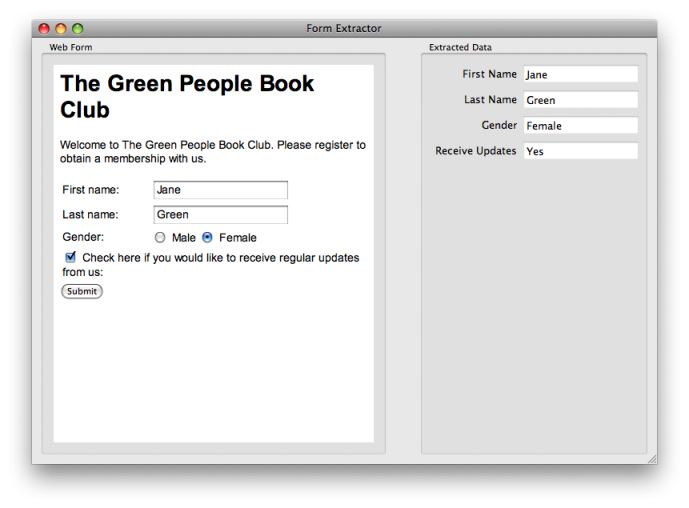

Form Extractor Example
Demonstrates how to read form data using JavaScript
The Form Extractor example shows how to use QWebFrame with JavaScript to extract form data.

Files:
- webkitwidgets/formextractor/formextractor.cpp
- webkitwidgets/formextractor/formextractor.h
- webkitwidgets/formextractor/formextractor.ui
- webkitwidgets/formextractor/mainwindow.cpp
- webkitwidgets/formextractor/mainwindow.h
- webkitwidgets/formextractor/main.cpp
- webkitwidgets/formextractor/formextractor.pro
- webkitwidgets/formextractor/formextractor.qrc